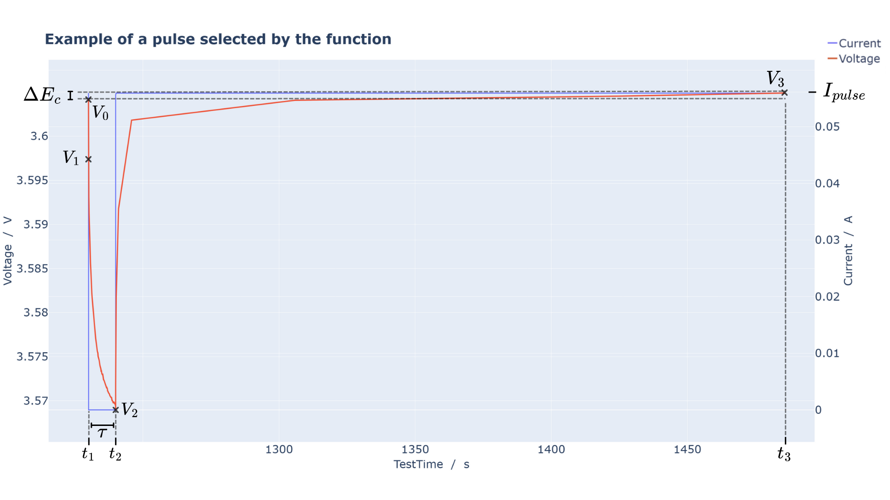
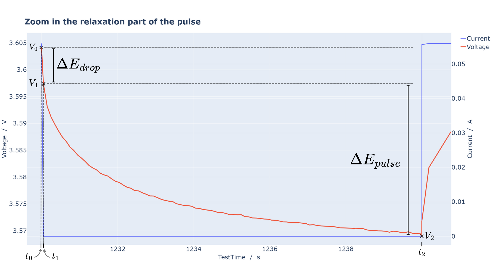

BatteryDataAnalysis.src.analysis_ICI#
Functions#
|
Pulse selection for ICI data |
|
Calculates the ICI parameters |
|
Calculates the relevant points represented in the |
|
Calculates diffusion coefficient for ICI test |
Module Contents#
- pulse_number_ICI(df_input)[source]#
Pulse selection for ICI data
For every cycles, it gives a pulse number for every relaxation pulse.
Then it gives this number for the last point before the pulse until the last point before the end of the charging/discharging.
Finally, it creates a nested Dataframe structuring the ICI data for each pulse.
Here is a schema of a selected pulse and its relevant points:


The corresponding parameters that can be used in a custom function (see
add_function()) are: V0, V1, V2, V3, t0, t1, t2, t3, Ipulse, delta_Ec, delta_Edrop, delta_Epulse that are calculated incalculate_relevant_points_ICI().- Parameters:
df (pandas.DataFrame) – DataFrame containing the ICI data to process
- Return type:
Dict containing the nested DataFrames as values and their pulse number as keys
{kind=link}
{kind=link}
- global_calculation_ICI(df_nested, my_func_list)[source]#
Calculates the ICI parameters
Given a nested DataFrame containing the ICI data, this function calculates the ICI parameters for each pulse
- Parameters:
df_nested (Dict) – Dict containing the nested DataFrames corresponding to each pulse
- Returns:
Dict containing the nested DataFrames as values and their pulse number as keys
- Return type:
dict
- calculate_relevant_points_ICI(df_pulse)[source]#
Calculates the relevant points represented in the
pulse_number_ICI()documentation.These parameters can be used in a custom function to calculate new parameters (see
add_function()).- Parameters:
df_pulse (pandas.DataFrame) – DataFrame containing the data corresponding to one pulse
- Returns:
Tuple containing the relevant points : V0, V1, V2, V3, t0, t1, t2, t3, Ipulse, delta_Ec, delta_Edrop, delta_Epulse
- Return type:
tuple
- calculate_diffusion_coefficient_ICI(t1, t2, t3, delta_Ec, delta_Epulse)[source]#
Calculates diffusion coefficient for ICI test
See the
pulse_number_ICI()documentation for the points definition. The formula comes from the paper from Y. Chien et al. (2023) “Rapid determination of solid-state diffusion coefficients in Li-based batteries via intermittent current interruption method”The diffusion coefficient is calculated using the following formula:
\[D = \frac{4}{9\pi} \cdot \text{radius}^2 \cdot \left( \frac{\frac{\Delta E_c}{t_3 - t_2}}{\frac{\Delta E_{\text{pulse}}}{\sqrt{t_2 - t_1}}} \right)^2\]- Parameters:
t1 (float)
t2 (float)
t3 (float)
delta_Ec (float)
delta_Epulse (float)
- Returns:
Diffusion coefficient of the selected pulse
- Return type:
float